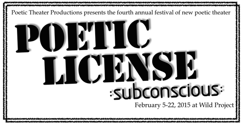
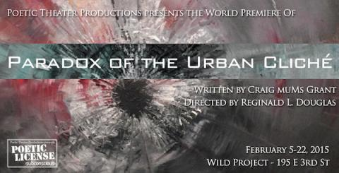
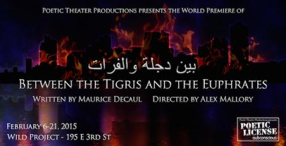

|
Poetic License 2015

Poetic License 2015: subconscious
Poetic License is Poetic Theater Productions’ annual festival of new poetic theater, which has grown from five days to three weeks in the past four years. The fourth annual Poetic License features two fully realized productions of exciting new poetic plays written by company members, a reading series of six new works of poetic theater identified through an open submission process, and three special events: Breaking Our Silence, a celebration of LGBT voices; Love, Redefined, remixes, and re-imaginings of traditional love poems in celebration of non-commercial, non-traditional love; and Generation Now, a showcase of youth voices in poetic theater in partnership with Urban Word NYC, Girl Be Heard, Dare Tactic, viBe Theater Experience and Earsay Youth Voices.

The world premiere of:
Paradox of the Urban Cliché
One fateful night brings Ceez, a hustler desperate to get off the block, face to face with his dreams, fears, and the power to change his life forever. A play full of passionate love, hip-hop rhythms, and the spirit of recent events, Paradox of the Urban Cliché examines the strength it takes to withstand the Agents of Authority that trap us in the hood of our mind.
Written by Craig 'muMs' Grant
Directed by Reginald L. Douglas
Featuring Morgan James Nichols*, Tré Davis*, Eboni Flowers* and Jaime Lincoln Smith*
Stage Managed by Sarah Devon Ford*
Lighting Design by Derek Miller
Video Design by David Palmer
Technical Direction by Ori Bensimhon
Costumes Design by Liene Dobraja
Sound Design by Julian Evans
Properties Design by Travis Bell
Set Design by Paul DePoo III
Dramaturgy by Lauren Whitehead
Post-Show discussions will take place after several performances. More details TBD.
Performances:
Thursday February 5th at 8PM
Saturday February 7th at 8PM
Sunday February 8th at 7PM
Wednesday February 11th at 8PM (Official Opening)
Friday February 13th at 8PM
Sunday February 15th at 7PM
Monday February 16th at 8PM (President's Day)
Thursday February 19th at 8PM
Saturday February 21st Matinee at 3PM
Sunday February 22nd Matinee at 3PM (Closing)

The world premiere of:
Dijla Wal Furat: Between the Tigris and the Euphrates
The lives of four U.S Marines, a Reporter from Agence France and four Iraqis are forever changed one night after an errant mortar round kills a child, during the rush to Baghdad. Phantoms haunt the people of a burning Baghdad and as Saddam’s statue falls in Firdos square the remaining Marines and Iraqis are forced together in a moment which will test their humanity, empathy and potential for forgiveness.
Written by Maurice Decaul
Directed by Alex Mallory
Featuring Ali Andre Ali, Victory Chappotin, Fahim Hamid*, Ankur Rathee, Temesgen Tocruray, Nabil Viñas, Perri Yaniv* and Katie Zaffrann*
Stage Managed by Abby Vincent
Lighting Design by Derek Miller
Video Design by Brad Peterson
Technical Direction by Ori Bensimhon
Costumes Design by Liene Dobraja
Sound Design by Jamie A. Diaz
Properties Design by Travis Bell
Set Design by Paul DePoo III
Assistant Direction by Jessica Barnhill
Performances:
Friday February 6th at 8PM
Saturday February 7th Matinee at 3PM
Monday February 9th at 8PM
Tuesday February 10th at 8PM (Official Opening)
Thursday February 12th at 8PM
Sunday February 15th Matinee at 3PM
Monday February 16th Matinee at 3PM (President's Day)
Tuesday February 17th at 8PM
Wednesday February 18th at 8PM
Saturday February 21st at 8PM (Closing)
*Appears courtesy of Actors Equity Association
SPECIAL EVENTS:
6@6 Reading Series:
All readings will be taking place at 6PM.
Monday, February 9th: Soldier Love: An Aerial Play by Helen Banner
Thursday, February 12th: Milk by Jacqueline Jones LaMon
Friday, February 13th: 39 Hours In the Soviet City of Roses by Dwayne Yancey
Tuesday, February 17th: The History of Pigtails by Aissa Martell
Wednesday, February 18th: Everything Was Beautiful and Nothing Hurt By Allison Zajac Batell
Thursday, February 19th: We Lost Ourselves by Ryan F. Johnson
The 6@6 Reading Series brings in six new poetic works from artists not only in New York, but throughout the country. The reading series allows playwrights the ability to have their work read and workshopped in the time leading up to the festival where they then have a lightly staged reading allowing the playwright to see how an audience reacts to their work. Readings that have been performed in previous festivals have been written by Kelly Zen-Yie Tsai, Darian Dauchan, and Craig ‘muMs’ Grant.
Generation Now!
Saturday February 8th at 3PM is the 3rd Annual showcase of youth voices featuring new poetic work including coming-of-age stories & perspectives on the world as 2020 approaches by youth participating in viBe Theater Experience, Girl Be Heard, Dare Tactic, and Earsay Youth Voices.
About the Organizations:
viBe Theater Experience:
Original theater and music about real-life issues written and performed by New York City teenage girls. viBe’s intensive, free programs engage, inspire and empower girls (ages 13-19) to write, create, publish, direct and perform personal and truthful collaborative theater and music about the real-life issues they face daily. viBe provides a safe, creative space for girls to express their voices, take on challenges and gain the self-confidence necessary to succeed personally, artistically and academically. Since 2002, more than 60 viBe productions have brought free theater, live musical performances, music videos and radio plays to thousands of diverse audience members, changing their perceptions about the kind of art that young women can create.
Girl Be Heard:
Girl Be Heard uses theater as a vehicle to empower young women to become brave, confident, socially conscious leaders while exploring their own challenging circumstances. Girl Be Heard is a not-for-profit theater collective and educational program. Their curriculum develops and strengthens girls' voices. They provide a safe environment to girls to write, direct, and perform theater productions under the guidance of professional directors, playwrights, actors, activists, and intellectuals. Girl Be Heard's school and community-based programs engage company members - young women age 12-21- through a series of writing prompts, readings, theatre exercises and discussions addressing a variety of issues that have included identity (race, class, sexual orientation, ability), body image, suicide, teen pregnancy, substance abuse, gun violence, sex trafficking, forced child marriage, violence against women and girls, and civil and human rights. The Girl Be Heard philosophy is "If a girl can change her own life, she can change the lives of girls everywhere."
Dare Tactic:
The Dare Tactic is a creative group with the mission of cultivating creativity in all forms. We "dare" each other to do the work we want to see. We kicked off the year with sold out performances of our original production HOPELESS written and directed by Vinny Eden Ortega.
EarSay Youth Voices: Transforming Trauma Into Art:
EarSay Youth Voices is a non-profit arts organization based in Queens, NY. The program was founded by actress/writer/radio producer Judith Sloan, born out of EarSay’s partnership with the International High School at LaGuardia Community College where many teenagers have emigrated to the U.S. from war-zones and conflict-zones. The premise of their workshops is based on healing through artistic expression using a combination of music, movement, theatre, storytelling and radio production. This process helps release the stories and stressors that prevent people—who have been traumatized by war, economic or natural disasters—from moving forward. This program brings an understanding of confronting obstacles through artistic expression to communities that are poor, displaced, or don’t have access to artistic training, serving approximately 450 students. The project grows out of the commitment to creating artistic works that evolve out of individual experience and community. In this case, the community is immigrant and refugee teenagers attending school in New York City. At a time of war, global tension, and polarization, their program encourages a depth of scholarship and storytelling that shapes the experience of the participants, giving them tools to make connections between cultures, and shed light on the complexity and humanity of each individual, and deepen what it means or could mean to be part of a global community.
Love, Redefined
Saturday February 14th (Valentines Day) at 8PM
Poetic Theater Productions’ fifth annual celebration of non-commercial, non-traditional love featuring poetic and theatrical remixes, re-imaginings and riffs by more than ten incredible poets & playwrights responding to traditional sonnets and love poems. Inspiration poems and newly developed pieces are presented side-by-side. Previous years included inspiration pieces by William Shakespeare, Pablo Neruda, Ghandi, Audre Lorde, John Donne, George Herbert, Elizabeth Barrett Browning, e. e. cummings and more.
Directed by Andrew Willis-Woodward and Dontonio Demarco
Featuring new work by Reginald Flood, Catherine Weingarten, Dipika Guha, Gina Femia
(Several Additional Writers TBA)
Cast TBA
Breaking Our Silence
February 20, 2015 at 8:00pm A celebration of LBGTQ voices sharing their experiences of coming out, finding love, breaking the silence and speaking out!
Written by and featuring: Ty Defoe, Timothy DuWhite, Sentell Harper, Joanna Hoffman, Sam Laroche, Charan P. Morris and Storm Thomas
Director: Daniel Banks
"This year's edition of Breaking Our Silence focuses on thriving. The performers have worked together durig a brief workshop period to link their narratives of how they got to the present moment and where they are going. While it is critical to acknowledge the struggles and oppressions we all face, we also celebrate our successes and the fact that we make the choice to thrive and survive! We hope our stories will inspire others." -Danial Banks, director
|